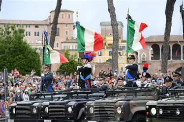
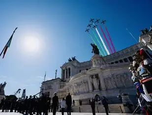

Oggi 2 giugno 2026, a Roma, la parata del 2 giugno ha celebrato l'80esimo anniversario della Repubblica italiana.
Sergio Mattarella: "Gli italiani con il primo suffragio universale del Paese, compirono un atto di libertà senza precedenti"
“Con il suffragio universale, donne e uomini, insieme per la prima volta, decisero di lasciarsi alle spalle le macerie della guerra e le nefandezze di un regime oppressivo e totalitario, per avviare la ricostruzione di un Paese libero, democratico, repubblicano. Nell'ottantesimo anniversario della Repubblica, onoriamo la memoria dei militari che, con i Gruppi di Combattimento, reparti che, con abnegazione e valore combatterono nella Guerra di Liberazione, furono tra i protagonisti della rinascita d'Italia, restituendo alla nazione onore e libertà".
